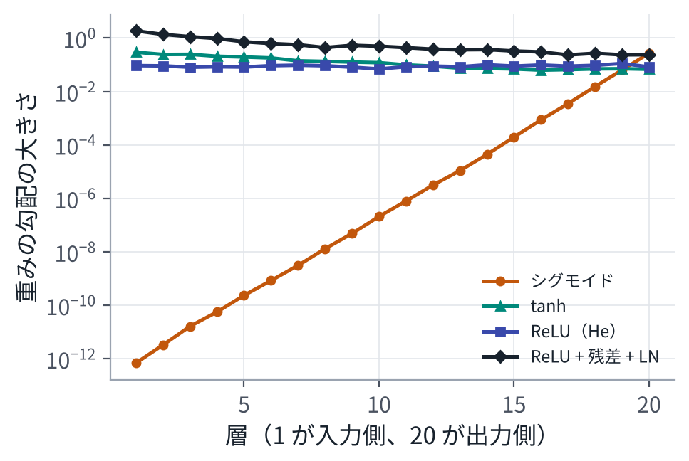
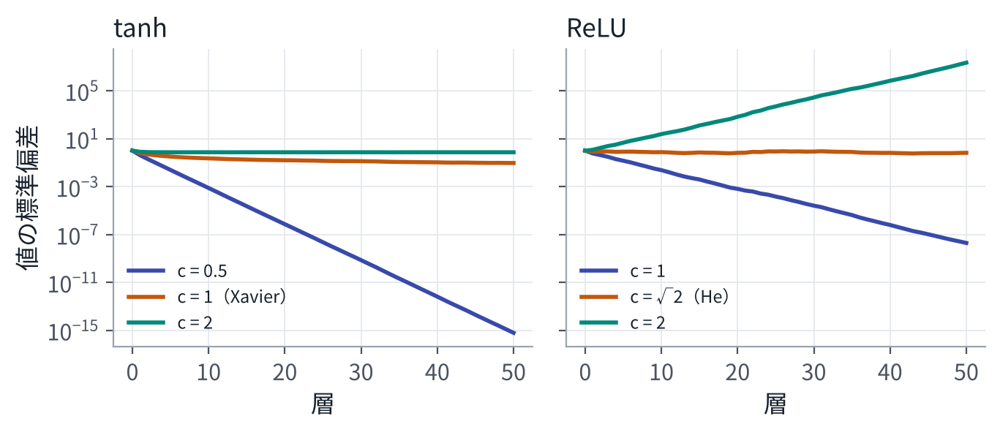
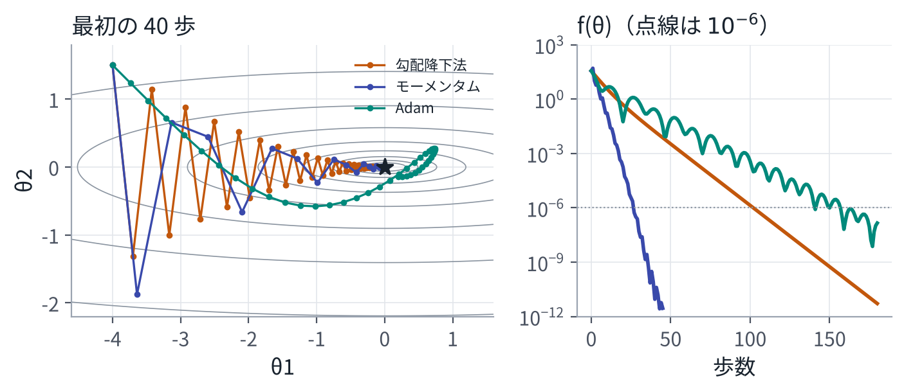
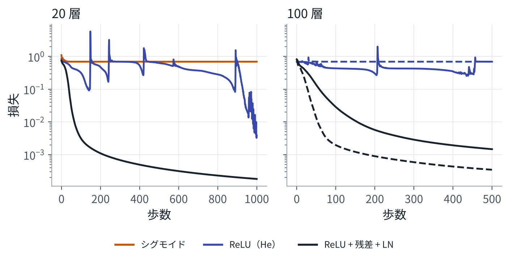

目次
1勾配は、層ごとの掛け算で伝わる
3.4 節の式を、層の数だけ繰り返すと何が起きるかを見る。ここでは列ベクトルで書き、層 \(l\) を \(a_l = W_l h_{l-1}\)、\(h_l = \sigma(a_l)\) とする。逆伝播の 1 段は次のとおりである。
\[ \frac{\partial L}{\partial h_{l-1}} = W_l^\top \Big(\sigma'(a_l) \odot \frac{\partial L}{\partial h_l}\Big) \]勾配は 1 段戻るたびに、\(W_l^\top\) と \(\sigma'(a_l)\) を掛けられる。大ざっぱに言えば、1 段あたり「重みの大きさ × 活性化関数の傾き」倍になる。これが 1 より小さければ、\(L\) 段で指数的に小さくなり（勾配消失）、1 より大きければ指数的に大きくなる（勾配爆発）。
シグモイドは傾きが最大でも 1/4 なので（3.3 節）、重みの大きさが 1 程度なら、1 段で 4 分の 1 以下になる。演習で、20 層・幅 64 のネットに渦巻きのデータを通し、学習前の各層の重みの勾配の大きさを測ると、図 1 になった。

シグモイドの 1 層目の勾配は \(6.8 \times 10^{-13}\)、20 層目は \(0.27\) で、比は \(2.5 \times 10^{-12}\) だった。19 段で \((1/4)^{19} \approx 3.6 \times 10^{-12}\) なので、「1 段で 4 分の 1」の見積もりとよく合う。入力に近い層の重みは、勾配降下法でほとんど動かない。
この問題は、時間方向に長くつなぐ再帰型ネットについて 1991 年に Hochreiter が[1]、1994 年に Bengio らが分析した[2]。深い全結合ネットについては、2010 年に Glorot と Bengio が、シグモイドとランダムな初期値の組み合わせが学習を妨げる様子を調べた[3]。以下の工夫は、どれも「1 段あたりの倍率を 1 に近づける」か、「掛け算を通らない道を作る」ものである。
2初期値の大きさをそろえる
学習の最初の重みは乱数で決める。その大きさ（分散）を、層の入力の数 \(n\) に合わせて決めると、深さによらず値の大きさがそろう。
1 つのニューロンの \(a = \sum_{j=1}^{n} W_j h_j\) で、重み \(W_j\) が互いに独立で平均 0、分散 \(v\)、入力 \(h_j\) とも独立だとすると、
\[ \mathrm{Var}(a) = n\, v\, \mathbb E[h_j^2] \]である。これが層を通っても変わらないように \(v\) を選ぶ。
- tanh。0 の近くでは \(\tanh a \approx a\) なので、\(\mathbb E[h^2] \approx \mathrm{Var}(a_{\text{前}})\) となり、\(v = 1/n\) で大きさが保たれる。逆伝播でも保つことを考えて、Glorot と Bengio は \(v = 2/(n_{\text{入力}} + n_{\text{出力}})\) を提案した[3]（Xavier の初期化）。
- ReLU。\(a\) が 0 について対称なら、半分が 0 にされるので \(\mathbb E[\mathrm{ReLU}(a)^2] = \tfrac12 \mathbb E[a^2]\) である。\(n v \cdot \tfrac12 = 1\) から \(v = 2/n\) になる（He の初期化）[4]。
標準偏差で書くと \(c/\sqrt{n}\) で、tanh なら \(c = 1\)、ReLU なら \(c = \sqrt 2\) である。演習で、50 層・幅 256 のネットに乱数の入力を通し、\(c\) を変えて層ごとの値の標準偏差を測った。

| 活性化関数と \(c\) | 50 層目の値の標準偏差 | 勾配を 50 層戻したときの倍率 |
|---|---|---|
| tanh、\(c = 0.5\) | \(6.2 \times 10^{-16}\) | \(6.2 \times 10^{-16}\) |
| tanh、\(c = 1\) | 0.092 | 0.11 |
| tanh、\(c = 2\) | 0.73 | \(2 \times 10^{3}\) |
| ReLU、\(c = 1\) | \(2.0 \times 10^{-8}\) | \(2.8 \times 10^{-8}\) |
| ReLU、\(c = \sqrt 2\) | 0.66 | 0.93 |
| ReLU、\(c = 2\) | \(2.2 \times 10^{7}\) | \(3.1 \times 10^{7}\) |
tanh の \(c = 2\) は、値は消えないが、3 割のニューロンが \(|h| > 0.9\) の平らなところにいて、逆向きには勾配が 50 層で 2000 倍に膨らむ。値の大きさだけでなく、勾配の大きさも見なければならない。ReLU の \(c = \sqrt 2\) は、値も勾配も 50 層でほぼ保たれる。
3活性化関数を選ぶ
- シグモイドは、傾きが最大 1/4 で、出力の平均が 0.5（0 を中心にしていない）。Glorot と Bengio は、この平均のずれのために、深いネットの上のほうの層が飽和（0 か 1 に張り付く）しやすいことを示した[3]。いまは隠れ層にはほとんど使わず、確率を出す出口や、ゲート（0〜1 の重み付け）に使う。
- tanh は 0 を中心にしていて、傾きは最大 1。ただし、入力が大きいと平らになる（飽和する）のは同じである。
- ReLU は、正の側で傾きがずっと 1 で、飽和しない[5]。負の側では勾配が 0 なので、入力がいつも負になったニューロンは、何も出さず、学習もしなくなる（死んだニューロン）。演習
ch03_mlp.pyの幅 2 のネットを調べると、学習後、2 つ目の隠れ層の 2 個がどちらも、すべての入力で 0 を出していた。出力が入力によらず一定になり、正解率が 50% のままだったのはこのためである。 - GELU は、ReLU を 0 の近くでなめらかにしたもので[6]、Transformer でよく使われる。
4ミニバッチと確率的勾配降下法
1 章で触れたとおり、データが多いときは、毎回すべてのデータで勾配を計算せず、ランダムに選んだ \(B\) 個（ミニバッチ）の平均で代用する。
\[ g_B = \frac{1}{B}\sum_{i \in \text{バッチ}} \nabla_\theta \ell_i(\theta) \]\(g_B\) の期待値は全データの勾配に等しく（偏りがない）、ばらつき（分散）は \(1/B\) に比例する。標準偏差で言えば \(1/\sqrt{B}\) に比例するので、\(B\) を 4 倍にすると、ずれはおよそ半分になる。演習で、2000 点の渦巻きと 2 → 64 → 64 → 2 のネットで、ミニバッチの勾配と全データの勾配の差（相対誤差）を測った。
| バッチの大きさ \(B\) | 相対誤差の平均 | 前の行との比 |
|---|---|---|
| 1 | 4.16 | ― |
| 4 | 2.25 | 1.85 分の 1 |
| 16 | 1.18 | 1.91 分の 1 |
| 64 | 0.587 | 2.01 分の 1 |
| 256 | 0.271 | 2.17 分の 1 |
\(B\) を 4 倍にするごとに、誤差は 1.85〜2.17 分の 1 になった。最後に 2 より少し大きいのは、2000 点から重ならずに 256 点を選ぶと、全体に近づくぶん、ばらつきが少し減るからである。
\(B\) を大きくすると 1 歩の向きは正確になるが、1 歩の計算が重くなる。GPU のメモリに入る範囲で \(B\) を決めることが多い。勾配のばらつきは学習を少し揺らすが、平均すれば正しい向きに進む。
5最適化手法：モーメンタムと Adam
損失の谷が、ある向きには急で、別の向きにはゆるいとする。2 次関数 \(f(\theta) = \tfrac12(\theta_1^2 + 25\,\theta_2^2)\) で考える。勾配降下法 \(\theta \leftarrow \theta - \eta \nabla f\) は、座標ごとに \(\theta_i \leftarrow (1 - \eta\lambda_i)\,\theta_i\) となる（\(\lambda_1 = 1, \lambda_2 = 25\)）。発散しないためには \(\eta < 2/25 = 0.08\) が要るが、そうすると \(\theta_1\) は 1 歩で \(1 - \eta\) 倍、つまり 0.92 倍程度にしか縮まない。急な向きに合わせて学習率を選ぶと、ゆるい向きが遅くなる。
モーメンタム
勾配をそのまま使わず、過去の勾配をためた「速度」\(v\) で進む。
\[ v \leftarrow \beta v + \nabla f(\theta),\qquad \theta \leftarrow \theta - \eta\, v \]向きが毎回反転する成分（谷を横切る向き）は打ち消し合い、同じ向きが続く成分（谷に沿った向き）はたまって速くなる。
Adam
勾配の移動平均 \(m\) と、勾配の 2 乗の移動平均 \(s\) を、重みごとに持つ[7]。
\[ \begin{aligned} m &\leftarrow \beta_1 m + (1-\beta_1)\,g\\ s &\leftarrow \beta_2 s + (1-\beta_2)\,g^2\\ \theta &\leftarrow \theta - \eta\,\frac{\hat m}{\sqrt{\hat s} + \epsilon} \end{aligned} \]\(\hat m = m/(1 - \beta_1^t)\)、\(\hat s = s/(1 - \beta_2^t)\) は、最初の何歩かの偏り（0 から始めたために小さく出る）を直したもの。よく使う値は \(\beta_1 = 0.9\)、\(\beta_2 = 0.999\) である。
Adam の大事な性質は、ある重みの勾配がいつも \(k\) 倍（\(k > 0\)）になっても、\(\hat m\) も \(\sqrt{\hat s}\) も \(k\) 倍になって、1 歩の大きさが変わらないことである（\(\epsilon\) を除く）。図 1 のように、層や重みによって勾配の大きさが何桁も違っても、学習率を 1 つ決めれば、どの重みもおよそ \(\eta\) の歩幅で動く。重みの減衰（このあとの「過学習を抑える工夫」）を Adam と分けて入れた AdamW も、よく使われる。

学習率などを候補の中から選んで、\(f\) が \(10^{-6}\) 未満になり、そのあともずっとそのままでいるまでの歩数を比べると、勾配降下法（\(\eta = 0.076\)）が 101 歩、モーメンタム（\(\eta = 0.090\)、\(\beta = 0.5\)）が 27 歩、Adam（\(\eta = 0.263\)）が 157 歩だった。この単純な 2 次関数では、Adam は速くない。Adam が効くのは、勾配の大きさが重みごとに大きく違い、しかも途中で変わっていく、深いネットのような場合である。最適化手法の良し悪しは問題によって変わるので、1 つの例で決めつけないほうがよい。
学習率の予定
学習率は、途中で変えることが多い。よく使われる形の 1 つは、最初の \(T_w\) 歩で 0 から \(\eta_{\max}\) まで直線的に上げ（ウォームアップ）、そのあと余弦の形で下げるものである。
\[ \begin{aligned} \eta_t &= \eta_{\max}\, \frac{t}{T_w}\\ \eta_t &= \frac{\eta_{\max}}{2}\Big(1 + \cos\frac{\pi\,(t - T_w)}{T - T_w}\Big) \end{aligned} \]上の式を \(t < T_w\) で、下の式を \(T_w \le t \le T\) で使う（\(T\) は全体の歩数）。はじめは重みがでたらめで勾配が荒れやすいので小さく、終わりに近づいたら細かく合わせるために小さくする、という考え方である。
6正規化
初期化で大きさをそろえても、学習が進むと重みが変わり、層の出力の大きさもずれていく。そこで、層の途中で、値を平均 0、分散 1 にそろえ直す。そろえる向きによって、2 つの方法がある。
バッチ正規化（BatchNorm）は、特徴ごとに、ミニバッチの中のデータをまたいで平均と分散を取る[8]。データ \(i\) の特徴 \(j\) を \(x_{ij}\) として、
\[ \begin{aligned} \mu_j &= \frac{1}{B}\sum_{i} x_{ij}\\ \sigma_j^2 &= \frac{1}{B}\sum_{i}(x_{ij} - \mu_j)^2\\ y_{ij} &= \gamma_j\,\frac{x_{ij} - \mu_j}{\sqrt{\sigma_j^2 + \epsilon}} + \beta_j \end{aligned} \]\(\gamma_j, \beta_j\) は学習する倍率とずらしで、そろえすぎて表せる形が減らないようにするためのものである。推論のときは、学習中にためた平均と分散を使う。
層正規化（LayerNorm）は、データごとに、そのデータの特徴をまたいで平均と分散を取る[9]。式は上の \(i\) と \(j\) の役を入れ替えたものになる。
層正規化は、1 つのデータだけで計算が閉じるので、バッチの大きさに左右されず、学習と推論で同じ計算になる。列の長さが変わる文やトークンの列とも相性がよい。Transformer は、トークンごとに層正規化をかける（5 章）。最近の言語モデルでは、平均を引かずに大きさ（2 乗平均の平方根）だけをそろえる RMSNorm もよく使われる[10]。
7残差接続
層の出力を、入力に足す形にする[11]。
\[ h_{l+1} = h_l + F(h_l) \]\(F\) は普通の層（1 次式と活性化関数、ふつうは正規化も入れる）である。逆伝播では、1 段の微分（ヤコビ行列）が単位行列 \(I\) を含む。
\[ \begin{aligned} \frac{\partial h_{l+1}}{\partial h_l} &= I + \frac{\partial F}{\partial h_l}\\ \frac{\partial L}{\partial h_l} &= \frac{\partial L}{\partial h_{l+1}} + \Big(\frac{\partial F}{\partial h_l}\Big)^{\!\top} \frac{\partial L}{\partial h_{l+1}} \end{aligned} \]第 1 項のおかげで、出口の勾配は、何段あっても掛け算を通らずにそのまま入口まで届く。\(F\) の部分は、そこに「上乗せする補正」を学習すればよい。何もしないのがよい層なら、\(F = 0\) にすれば済む。
He らは、残差接続のない普通のネットでは、20 層より 56 層のほうが、学習データでの誤差まで大きくなることを示した（過学習ではなく、学習そのものが難しくなる）[11]。残差接続を入れた 152 層のネットは、ILSVRC 2015 を誤り率 3.57% で勝った。
演習で確かめる
幅 32 のネットに、モーメンタム付きの勾配降下法で渦巻きを学習させた。20 層では、シグモイドのネットは損失が 0.693（\(\log 2\)、当てずっぽうと同じ）から動かない。He の初期化の ReLU のネットは、途中で何度も損失が跳ね上がりながら、1000 歩で 0.004 まで下がった。残差接続と層正規化のネットは、100 歩で 0.003 まで下がった。
100 層にすると差がはっきりする。普通の ReLU のネットは、学習率 0.003 では一度 0.43 まで下がったあと 0.693 に戻り、0.01 では最初から 0.693 から動かなかった。残差接続と層正規化のネットは、どちらの学習率でも、100 歩で 0.03 以下、500 歩で 0.001 以下まで下がった。

8過学習を抑える工夫
深いネットは重みが多く、1 章の過学習（学習データでは良いが、新しいデータで悪い）が起きやすい。よく使う対策を挙げる。
- 重みの減衰。損失に \(\lambda \|\theta\|^2\) を足して、重みが大きくなりすぎないようにする。1 章のリッジ回帰と同じ考え方である。
- ドロップアウト。学習中、各ニューロンを確率 \(p\) で 0 にする（推論では全部使い、期待値が合うように倍率を調整する）[12]。特定のニューロンに頼りすぎない重みが学習される。AlexNet が使った[13]。
- 早期打ち切り。検証データの損失を見ながら学習し、それが上がり始めたところで止める。
- データを増やす、水増しする。画像なら、ずらす、裏返す、色を変えるなどして、同じラベルの例を増やす。いちばん確実な対策は、データそのものを増やすことである。
9工夫の一覧
| 工夫 | 何を直すか | このあとの章で |
|---|---|---|
| 初期化（Xavier、He） | 層を通るたびに値や勾配が縮む・膨らむのを、学習の最初に防ぐ | ほぼすべてのモデル |
| ReLU、GELU | シグモイドの傾きが小さい（最大 1/4）ことによる勾配消失 | Transformer の MLP（5 章） |
| ミニバッチ | 全データで勾配を計算する重さ | すべての学習 |
| モーメンタム、Adam（AdamW） | 谷の形がいびつなときの遅さ、重みごとの勾配の大きさの違い | すべての学習 |
| 学習率の予定 | 学習の最初の荒れと、終わりの細かい調整 | Transformer の学習 |
| 正規化（BatchNorm、LayerNorm、RMSNorm） | 学習中に層の出力の大きさがずれていくこと | Transformer、ViT（5、6 章） |
| 残差接続 | 深いネットで勾配が入口まで届かないこと | Transformer のすべてのブロック（5 章） |
| 重みの減衰、ドロップアウト | 過学習 | 多くのモデル |
10演習
演習 3.5深いネットを学習させる
初期値と値の大きさ、層ごとの勾配、20 層と 100 層の学習、最適化手法、ミニバッチ、正規化を確かめる。2 分ほどかかる。
python3 vla_math/ch03_5_training.py出力の一部：
(2) 20 層・幅 64 のネットで、学習前の層ごとの重みの勾配の大きさ（渦巻き 400 点の交差エントロピー）
シグモイド : 1 層目 6.84e-13、10 層目 2.09e-07、20 層目 2.69e-01（1 層目 / 20 層目 = 2.5e-12）
ReLU（He） : 1 層目 9.24e-02、10 層目 6.92e-02、20 層目 8.22e-02（1 層目 / 20 層目 = 1.1e+00）
(3) 幅 32 のネットに渦巻きを学習させる（モーメンタム 0.9、全 400 点）
100 層、500 歩:
ReLU（He） 学習率 0.003: 損失 0.690（0 歩）、0.433（100 歩）、0.427（300 歩）、0.693（500 歩）
ReLU + 残差 + LN 学習率 0.003: 損失 0.818（0 歩）、0.029（100 歩）、0.003（300 歩）、0.001（500 歩）
(4) f(θ) = ½(θ1² + 25 θ2²) を (−4, 1.5) から小さくする. 学習率などは候補の中で最速のもの
gd : 学習率 0.076 のとき 101 歩
momentum: 学習率 0.090、β = 0.5 のとき 27 歩
adam : 学習率 0.263 のとき 157 歩
見るところ：
- (2) シグモイドの勾配の比 \(2.5 \times 10^{-12}\) は、\((1/4)^{19}\) とほぼ同じ桁である。
- (3) 普通の ReLU のネットは、100 層では一度下がった損失が戻ってしまう。残差接続を入れると安定する。
変えてみる：(3) の残差のネットから層正規化を外す（layernorm を通さない）と、100 層で何が起きるかを見る。(4) で \(25\) を \(100\) にすると、3 つの方法の差がどう変わるかを見る。
11まとめ
- 勾配は、層を戻るたびに「重みの大きさ × 活性化関数の傾き」倍され、深いと指数的に消えるか爆発する。シグモイドの 20 層では、入力側の勾配が出力側の約 \(10^{-12}\) 倍になる。
- 初期値の分散を、tanh なら \(1/n\)、ReLU なら \(2/n\) にすると、値と勾配の大きさが深さによらずそろう。
- Adam は、重みごとに勾配の大きさで割るので、勾配の大きさが重みによって違っても同じ歩幅で進む。どの方法が速いかは問題によって変わる。
- 正規化は層の出力の大きさをそろえ直し、残差接続は勾配が掛け算を通らない道を作る。この 2 つがあると、100 層でも安定して学習できる。Transformer のブロックは、この形でできている。
12確かめる問題
- \(\mathrm{Var}(a) = n\,v\,\mathbb E[h^2]\) を、\(W_j\) と \(h_j\) が独立で \(W_j\) の平均が 0 であることを使って示せ。
- \(a\) が 0 について対称な分布のとき、\(\mathbb E[\mathrm{ReLU}(a)^2] = \tfrac12 \mathbb E[a^2]\) となるのはなぜか。
- Adam で、ある重みの勾配がいつも \(k\) 倍になったとき、1 歩の大きさが変わらないことを確かめよ（\(\epsilon = 0\) とする）。
- バッチの大きさが 1 のとき、バッチ正規化は何を出力するか。層正規化ならどうか。
- 残差接続 \(h + F(h)\) を \(L\) 段重ねたとき、出口から入口への微分を展開すると、単位行列の項が必ず残ることを、\(L = 2\) で書いて確かめよ。
13読むもの
- Prince『Understanding Deep Learning』6 章（学習の手順）、7 章（勾配と初期化）、9 章（正則化）、11 章（残差ネット）[14]。この節の内容が、図とともにひととおり書かれている。
- Glorot と Bengio「Understanding the difficulty of training deep feedforward neural networks」[3]。深いネットの学習が難しい理由を、層ごとの値と勾配を測って調べた論文。
- He ら「Deep Residual Learning for Image Recognition」[11]。残差接続の論文。深いほど学習誤差が大きくなる図（図 1）を見るとよい。
- Kingma と Ba「Adam」[7]。アルゴリズム 1 の 10 行ほどが、上の式のすべてである。
※参考文献
- S. Hochreiter, "Untersuchungen zu dynamischen neuronalen Netzen," ディプロム論文（ドイツ語）, Technische Universität München, 1991.
- Y. Bengio, P. Simard and P. Frasconi, "Learning long-term dependencies with gradient descent is difficult," IEEE Transactions on Neural Networks 5(2), 157–166, 1994.
- X. Glorot and Y. Bengio, "Understanding the difficulty of training deep feedforward neural networks," AISTATS, PMLR 9, 249–256, 2010. https://proceedings.mlr.press/v9/glorot10a.html
- K. He, X. Zhang, S. Ren and J. Sun, "Delving Deep into Rectifiers: Surpassing Human-Level Performance on ImageNet Classification," 2015. arXiv:1502.01852
- V. Nair and G. E. Hinton, "Rectified linear units improve restricted Boltzmann machines," ICML, 2010.
- D. Hendrycks and K. Gimpel, "Gaussian Error Linear Units (GELUs)," 2016. arXiv:1606.08415
- D. P. Kingma and J. Ba, "Adam: A Method for Stochastic Optimization," 2014. arXiv:1412.6980
- S. Ioffe and C. Szegedy, "Batch Normalization: Accelerating Deep Network Training by Reducing Internal Covariate Shift," 2015. arXiv:1502.03167
- J. L. Ba, J. R. Kiros and G. E. Hinton, "Layer Normalization," 2016. arXiv:1607.06450
- B. Zhang and R. Sennrich, "Root Mean Square Layer Normalization," NeurIPS, 2019. arXiv:1910.07467
- K. He, X. Zhang, S. Ren and J. Sun, "Deep Residual Learning for Image Recognition," 2015. arXiv:1512.03385
- N. Srivastava, G. Hinton, A. Krizhevsky, I. Sutskever and R. Salakhutdinov, "Dropout: A simple way to prevent neural networks from overfitting," Journal of Machine Learning Research 15, 1929–1958, 2014.
- A. Krizhevsky, I. Sutskever and G. E. Hinton, "ImageNet classification with deep convolutional neural networks," NeurIPS 25, 2012.
- S. J. D. Prince, "Understanding Deep Learning," MIT Press, 2023. 本の全文が公開されている。https://udlbook.github.io/udlbook/